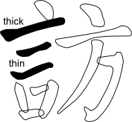
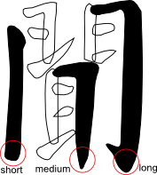
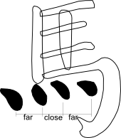
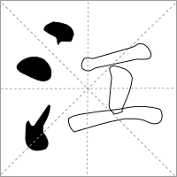
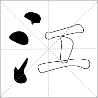

Stroke thickness, connection type, length, orientation, and ending are varied within groups of strokes to give balance and a more pleasing appearance to the character as a whole.
| Type of Group | Notes | Examples |
|---|---|---|
| 横 Horizontal Strokes | Vary solid / non-solid connections with adjacent vertical strokes. |
|
| Vary thickness of strokes |  | |
| 竖 Vertical Strokes | Vary stroke length and ending types |  |
| 点 Dots | Vary distance between dots |  |
| 折 Turns | Vary thickness |
|
See Yan Zhen Qing: Yan Qin Ceremony Inscription [Zhan Weixin 2007] for more details on grouping strokes.
Radicals are the smallest meaningful units in Chinese and are building blocks for characters. A few examples of radicals are shown below.
 



Radicals are fundamental for drawing characters and so I have isolated a number of SVG files in order to facilitate drawing characters that I do not have direct tracings of. The files are linked in the table below.
| Strokes | Radicals |
|---|---|
| One | 一、丨、丶、丿、乙（乚）、亅（了 |
| Two | 二、亠、人（亻）、儿、入、八、冂、冖、冫、几、凵、刀（刂）、力、勹、匕、匚、匸、十、卜、卩、厂（⺁）、厶、又、⺈ |
| Three | 口、囗、土、士、夂、夊、夕、大、女、子、宀、寸、小、尢、尸、屮、山、川、工、己、巾、干、幺（乡）、广、廴、廾、弋、弓、彐、彡、彳、邑（⻏ right）、阜（阝 left）、⺍ |
| Four | 心（忄）、戈、戸（戶、户）、手（扌）、支、攴（攵）、文、斗、斤、方、无、日、曰、月、木、欠、止、歹、殳、毋（母）、比、毛、氏、气、水（氵）、火（灬）、爪（爫）、父、爻、爿（丬），片、牙、牛（牜）、犬（犭）、王（玊、玉、⺩）、辶（辵）、耂（老 |
| Five | 玄、瓜、瓦、甘、生、用、田（由、甲、申）、疋、疒、癶、白、皮、皿、目、矛、矢、石、示（礻）、禸、禾、穴、立、罒（网、罓）、衤（衣 |
| Six | 竹（⺮）、米、纟（糸 、糹）、缶、羊、羽、而、耒、耳、聿、肉、臣、自、至、臼、舌、舛、舟、艮、色、虍、虫、血、行、襾（西、覀），艸 |
| Seven | 見（见）、角、言（訁、讠）、谷、豆、豕、豸、貝（贝）、赤、走、足（⻊）、身、車（车）、辛、辰、酉、釆（采）、里、麦（麥 |
| Eight | 金（钅、釒）、長（长、镸）、門、隶、隹、雨（⻗）、青、非 |
| Nine | 面、革、韋（韦）、韭、音、頁（页）、風（风）、飛（飞）、食（饣、飠）、首、香 |
| Ten | 馬（马）、骨、高、髟、鬥（斗）、鬯、鬲、鬼 |
| Eleven | 魚（鱼）、鳥（鸟）、鹵（卤）、鹿、麥（麦）、麻 |
| Twelve | 黄、黍、黑、黹 |
| Thirteen | 黽（黾）、鼎、鼓、鼠 |
| Fourteen | 鼻、齊（齐） |
| Fifteen | 齒（齿） |
| Sixteen | 龍（龙）、龜 |
| Seventeen | 龠 |
Some radicals look the same in printed fonts but are different in handwriting because of different strokes used. For example, the left and right ear radicals look the same in most printed fonts but are different in handwriting, as shown below. The left ear radical 阝, called 左耳旁, uses a straight vertical stroke 垂露竖 with a regular ending but the right ear radical ⻏, called 右耳旁, uses the hanging vertical stroke 悬针 with a pointed end.
Ling showing Left Ear Radical 左耳旁 Lang showing Right Ear Radical 右耳旁 Difference left and right ear radicals (陵 and 郎) It is a nice thought that you calligraphic fonts can enable you to reclaim sublties that have been lost in the early digital age.
See the page List of Kangxi and Simplified Radicals on this site for a complete list. See the page Names of Radicals and Character Parts on this site for a list of names of radicals.